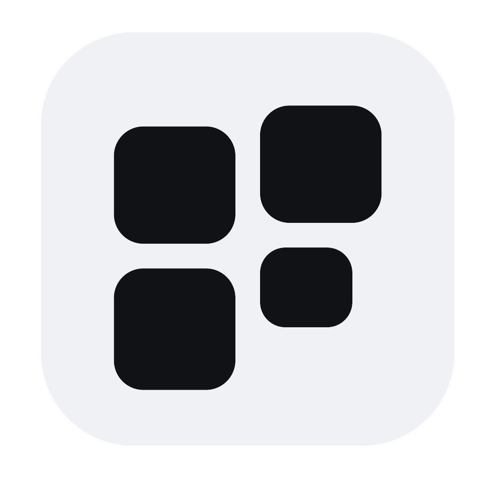
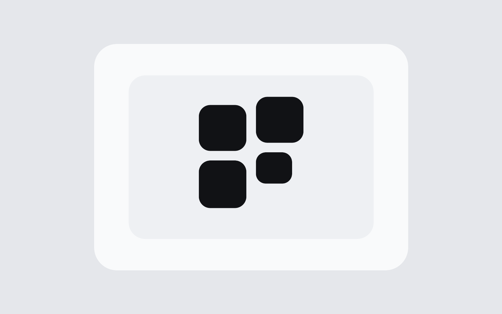
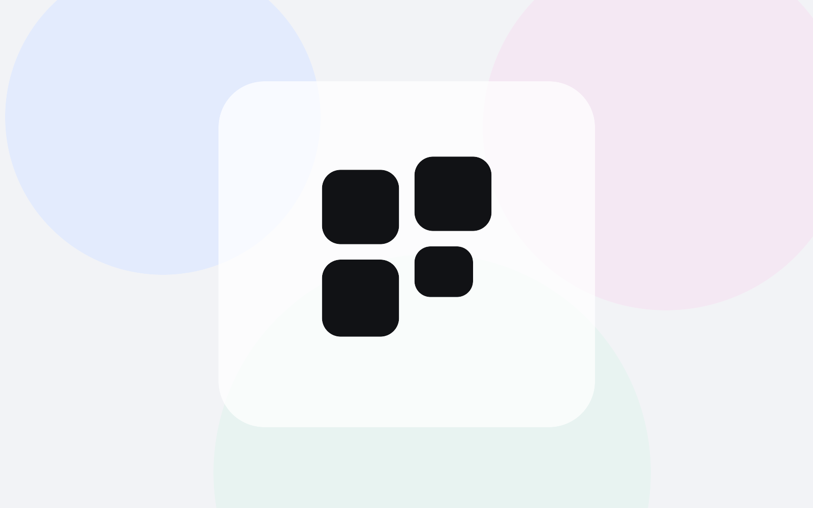
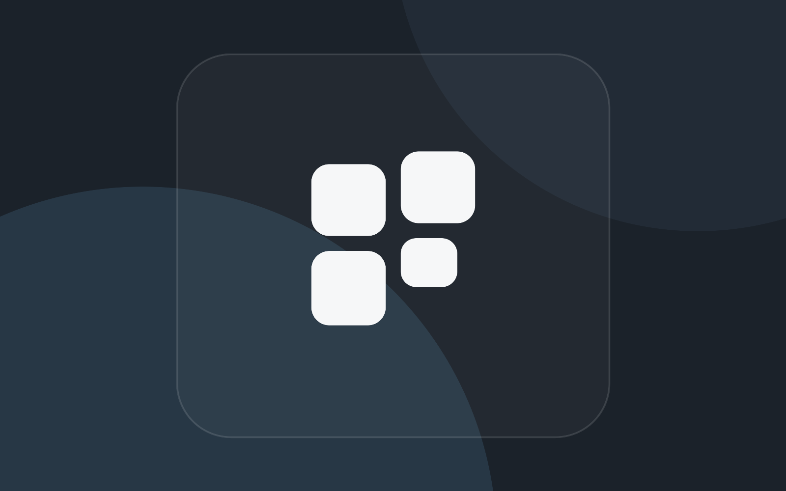
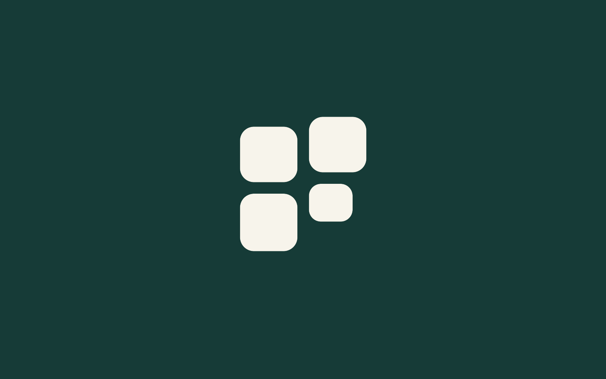

Primary mark
Flexible vector
Uses currentColor for interface and web contexts.
SVGPNGA fast, minimal media browser for macOS. Four media tiles form an abstract F and advance upward with a quiet flick.

Uses currentColor for interface and web contexts.
SVGPNGExplicit white artwork for controlled production use.
SVGPNGSilver-white tile with the final graphite mark.
SVGPNG


